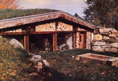
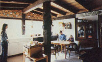
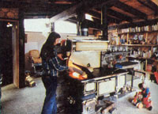

A pair of cordwood-construction pioneers have gone underground, in...
Folks who read "The Return of the Cordwood House" (in MOTHER NO. 47, page 29) may recall that-back in '75-my wife Jaki and I built a stackwood cabin, within a post-and-beam framework, that we called the Log-End Cottage.
Well, in February 1978-after two years and two months in that structure-we moved 100 feet west into our new cordwood, earthsheltered home . . . which we have since dubbed the Log-End Cave.
We had several reasons for building a new dwelling, primary among which was our craving for more space, privacy, and energy efficiency. But-though we were starting over-we simply couldn't build without including cordwood in the construction. The fact is that we're totally enamored of the warm and beautiful appearance of log-end-paneled walls.
Though our little cottage hadn't been difficult to heat, we knew-from research and experience-that we could build a roomier house that would be more ener gy efficient. Our goal was to go from heating 700 square feet on seven cords of wood a year to warming our proposed structure of 924 square feet (1,050 square feet gross) on three cords. Since we plan to homestead on our piece of land for a long time to come, the potential saving of four cords every year could mean the elimination of a lot of work over a lifetime . . . and even eventually provide an income from the sale of the "surplus" firewood.
When we began the construction of our earth-sheltered dwelling in 1977, there wasn't much literature available on underground buildings ... just as there had been little practical information on cordwood construction when we built the cottage in 1975. We figured, however, that there were three obvious major considerations in planning any earth-sheltered housing: structural strength (to support the heavy roof load and pressure on the walls), waterproofing, and livability (an all-inclusive term I use to describe both a home's atmosphere and its practicality).
Our friends feared that underground living would be dark, damp, and likely to induce claustrophobia . . . but, in truth, our finished "cavern" is much brighter inside than our aboveground cottage (or most surface houses, for that matter), and-thanks to our site selection-it has a better view and allows us to feel closer to the natural world around us.
Any structure should be built to withstand the worst possible conditions that can be anticipated. Let's suppose, for example, that March finds a four-foot snow accumulation on a 6"-thick sod roof. Then a warm spring rain pours for two days . . . the snow compresses . . . and the sod becomes soaked. Under such a circumstance, we estimated that the roof load on our home could approach 120 pounds per square foot . . . so normal framing, which is designed to handle only 40 pounds per square foot, wouldn't come near doing the trick. Our alternatives were to go with a reinforced concrete roof (an option not especially suited to the owner-builder on a low budget) or a heavy post-and-beam framework combined with a plank -and-beam roof.
And the roofing system we chose has turned out to be incredibly strong. The planking is 2 X 6 hemlock (a particularly sturdy wood) on full-sized 4 X 8 hemlock rafters spaced on 32" centers. The rafters, in turn, are carried by three massive 10 X 10, 30-foot-long barn beams. These megalithic timbers are, themselves, well supported by 8 X 8 and 10 X 10 posts.
Span is very important, and I tend to build over cautiously in this regard. For example, our 18-foot-long 4 X 8's are supported at each end and in the middle, for a span of about 8 feet. The greatest span for the 10 X 10's is slightly less than ten feet. The completed framework is sufficient to support 6 to 8 inches of sod . . . even in a heavy-snow climate.
(I wouldn't advise that anyone use an earth roof more than 12 inches thick in combination with timber framing. If such a heavy earth cover is required, it would be best to use a reinforced concrete-or concrete plank-roof. In doing so, though, you'd lose the beauty inherent in an exposed wooden ceiling ... not to mention the ease of construction and the advantage of low cost. In short, the trade-offs involved with a super-heavy roof are-in my opinion-simply not favorable.)
Besides having a strong roof, an earth-sheltered structure must be built so it will be able to withstand the lateral pressure against its side walls. We selected bonded 12" concrete (not cinder) blocks ... which resulted in the strongest wall possible, short of poured and reinforced concrete. Block construction is relatively inexpensive and easy for the owner-builder to deal with . . . especially when used in conjunction with surface bonding, which produces a block wall about six times stronger than does conventional block-and-mortar construction.
This bonding technique (in case you haven't heard of it) consists of applying a 1-18" coating of cement and fiberglass material to both sides of a wall of dry-stacked blocks. (Only the first layer is mortared . . . to establish a good, level surface for succeeding "courses".) For complete information on the technique, I strongly recommend Construction WithSurface Bond ing, a USDA information bulletin available for 45 cents from the Superintendent of Documents, Dept. TMEN, Government Printing Office, Washington, D.C. 20402. Ask for Stock Number 001-000-03340-9.
Despite the fact that we used two coats of Thoroseal waterproofing compound and installed footing drains according to the best specifications we could find, our cottage's basement wall still cracked along a mortar joint as a result of the second winter's frost heaves. We had an inch of water on the floor . . . which isn't overly serious in a basement, perhaps, but we wanted to make sure the same problem wouldn't occur in our underground living space.
Footing drains, you see, are only as good as is the percolation capability of the earth above them, and our mistake was in backfilling with the liquid-trapping claylike soil that came out of the excavation. (All the sealing in the world will do little good if the water is allowed to collect-and freeze-against the house.) The key, then, is to give the liquid an easy path away from the walls . . . in other words, to provide good drainage. Sand and gravel have the percolation qualities necessary to carry surface water to footing drains efficiently. Therefore, when building our underground house, we brought in 25 loads of sand for backfill.
Surface bonding supplies some waterproofing, too, since it offers a greater resistance to seepage than does a mortared wall. (In fact, according to a USDA bulletin: "Mortar joints actually act as capillary wicks and draw moisture through the cracks between the mortar and the blocks.") But to make doubly sure of a dry home, we also tarred the outside of the surface-bonded walls with black plastic roofing cement, and applied 6-mil black polyethylene over that.
When it came time to treat the roof, we used a method similar to that described by Hal Landen in "The Return of the Sod Roof" (MOTHER NO. 18, page 44). This involves first troweling on black plastic roofing cement . . . then bedding a layer of 6-mil black polyethylene in the goop . . . and finally repeating the process.
Well, I've no doubt that our roof is absolutely waterproof, but I wouldn't wish the dirty work involved in the technique we used on anyone else. Try some other method instead, such as the application of a 1/16" butyl or Bituthene protective membrane, or bentonite panels. (Bentonite is a natural claylike material which expands when it contacts water, sealing the surface against further penetration. It is increasingly popular in the earth-sheltered housing industry.)
Natural light and ventilation are the keys to an "open" atmosphere. Therefore, our home's south wall is only half underground, and features three 42" X 84" thermopane windows. Because they face directly south (the cave is aligned with the North Star), these inch-thick panes admit as much heat in the winter as they release ... and we reduce our home's heat loss further by using insulated shutters on cold winter nights.
On the north side, four trapezoidal thermopanes are situated where the gables would be if the house were a surface structure. They're completely blanketed with snow most winters, and the two largest windows are shuttered with two inches of beadboard during the coldest months. As a result there's little heat loss . . . or winter light. However, the winter sun (because of its low arc) penetrates deep into the house through the south windows, so we don't miss the little cold-season illumination the north panes would-if uncovered-provide. In the summer, though, they let a wonderfully soft north light into the back rooms.
In addition to the windows, we installed three double-paned acrylic skylights to let the sunshine into other parts of the house. They were moderately expensive ($348 for three, in 1977) but of good quality. (Keep in mind that a skylight admits about five times more illumination than does a wall window of the same size.)
To provide for ventilation, we installed large beadboard-covered vents-in every room-which can be adjusted to produce any cross-draft situation we need. Our woodburning stoves get their combustion air from the outside via 4" under-floor vents.
The fact that we have an excellent view of the nearby forest from our south windows contributes to the house's airy atmosphere, as does the open plan for the living-dining-kitchen area. Our chimney is centrally placed to provide a "roomy" feel, too, with one woodstove on each side of a massive stonemasonry heat sink. The perimeter chambers are separated by internal timber-framed walls, which keep the bedrooms four to eight degrees cooler than the living area . . . just the way we like it for sleeping.
Another factor that we had to consider in designing our home-and one that's not peculiar to underground housing -was that of cost. Earth-sheltered homes have the reputation of being expensive, since contractors generally charge about 10% more to build a belowground dwelling than they do for a surface home of the same size.
If the structure is owner -built, however, the cost can be kept down to between $10 and $15 per square foot, depending upon the builder's resourcefulness and upon whether or not his or her area suffers from overly stringent building codes. Our LogEnd Cave's total price-including excavation, landscaping, and $660 worth of outside labor-was just under $8,000. (By building near the cottage, we saved the cost of duplicating its already installed windplant and septic system.)
And just where, you may wonder, was stackwood masonry used in the underground structure? Well, it serves as infilling on the south wall and north gable end, and as an interior design feature. Our external walls consist of 10" cedar log-ends laid within a heavy post-and-beam framework, much as did those of the cottage. We also found that short 5" log ends were ideal to fill in the spaces where the 4 X 8's passed over the 10 X 10 barn beams.
In our four years of experimentation, we've found that "sawdust mortar" (consisting of 3 parts of sand, 3 of sawdust, 1 of Portland cement, and 1 of lime) is ideal for use with wood masonry. It seasons slowly, eliminating mortar shrinkage, and is extremely strong. (Remember, though, when mortaring the log ends together, that an insulation space should be left between the external and internal joints to arrest heat loss!)
This year, I've been asked to build a round cordwood house with an earth roof and earth berming on its northern arc. I'm looking forward to learning still more about the fascinating log-end construc tion technique!
EDITOR'S NOTE: Rob Roy, who'll conduct MOTHER's do-it-yourself earth-shel tered housing seminars this summer, is the author of Underground Houses: How to Build a Low-Cost Home (Sterling, 1979, $5.95) and Cordwood Masonry Houses (Sterling, 1980, $7.95). Both are available in many libraries and good bookstores . . . or-at the listed prices plus 95 cents shipping and handling-from Mother's Bookshelf, P.O. Box 70, Hendersonville, North Carolina 28791. The back issues mentioned in Mr. Roy's article can be ordered-for $3 .00 apiece plus $1.00 shipping and handling per order-from THE Mother Earth News(restricted) at the address given above.
|
 A sturdy post-and-beam frame, combined with a plank-and-beam roof,supports the heavy loads that wet winters place upon this earth- sheltered, log-end home. |
 Natural light floods the open-space living/dining/kitchen area all year (the sunshine reaches other areas, too, by means of three skylights) |
 The woodburning stoves get combustion air from outside, via 4"" under-floor vents |